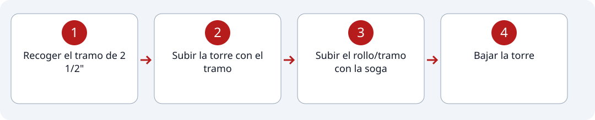

1
Estación #5
La Torre.
Recorrido de la estación

Pasos
2
Subir la torre con el tramo
3
Subir el rollo/tramo con la soga
4
Bajar la torre
Indicaciones
- Recoger el tramo
- * La carga del tramo debe ser en los hombros.
- Subir la torre
- * Subida libre, cualquier técnica; saltarse escalones, etc.
- * Dejar el tramo en la zona asignada en la parte de arriba de la torre; si no es así, penalización de 5 segundos.
- Subir el tramo con la soga
- * No se puede ni apoyar ni treparse a la baranda de la estructura de la torre; si no, penalización de 5 segundos.
- * Tampoco se puede usar la baranda para apoyar la cuerda (no sistema de polea); penalización de 5 segundos.
- * Una vez se tenga el rollo, hay que colocarlo en la zona asignada; en caso de que no, habrá penalización de 5 segundos.
- * La bajada de la torre no es libre, hay que pisar todos y cada uno de los escalones. 2 segundos de penalización por cada escalón saltado.
- * No se puede tomar de la baranda al bajar; penalización de 2 segundos por piso.